A soft, playful underwater world where Jeju seafood is discovered rather than sold.
Jeju K-Seafood Pop-Up Store presents Jeju seafood through the concept “The Hidden Gem of Jeju Blue,” inspired by Jeju’s ocean, sandy seabed, and Haenyeo culture.
The difficulty is that seafood promotion in an export market has to do two incompatible things at once. It must prove freshness, provenance and food-safety credentials to trade buyers, and it must feel light enough that a shopper walking past will stop, touch something and taste. A booth built as a fishmonger’s counter satisfies the first and repels the second. The design had to hold both audiences in one small footprint.
Every competing pavilion sells the sea as abundance. Jeju’s advantage is that it can sell the sea as a place.
Korean seafood stands converge on the same deep navy, the same chilled-display language. A booth in that palette disappears into its neighbours from ten metres away.
Competitors lead with species and price. Jeju’s island identity, sandy seabed and Haenyeo divers are unused assets and cannot be copied by a mainland exporter.
Whole fish on ice reads as trade-only. Softened forms, pale sand tones and packaged sampling let a general visitor engage before they are asked to buy.
Walking a long hall with no intention to stop. Gives the booth two seconds and one glance; will only enter if entry costs nothing.
Moves at the pace of the youngest member. An activity for the child buys the adult’s attention, and the photograph they take carries the booth further than any banner.
Looking for supply credentials, not entertainment. Needs a quieter edge of the booth where product, packaging and provenance can be read properly.
Design intent, not measured data. Bar length is the share of visitors the design expects to carry to each step; the drop after tasting is what the reward redemption is there to slow.
Kept to four questions so it can be completed standing, holding a sample cup. Results feed the next event’s zoning; no figures are published here.
The event creates a soft and playful underwater experience where visitors can discover, taste, and engage with Jeju seafood in an approachable way. The booth is built as a shallow seabed: pale sand floor, rounded rock and coral forms, a wave-cut wall, and product raised on soft plinths so that browsing feels like finding something rather than being sold to.
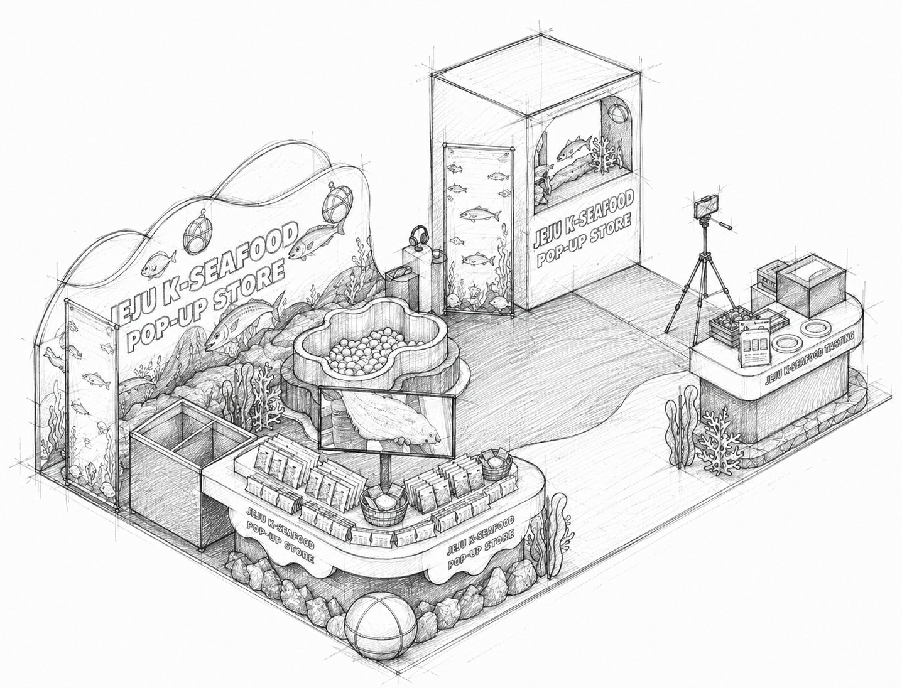
Wave-form wall, aquarium graphics and packaged product on a rounded sand-toned counter.
A lucky-draw basin borrowed from the Haenyeo float — the one activity that stops a passer-by outright.
A framed opening with fish and kelp graphics, sized for two people and a phone on a tripod.
Set apart on the quiet side, with induction cooking, cups, survey tablet and reward hand-out in one movement.
Two sides left fully open; the sand-toned floor graphic runs out past the booth line to pull traffic across the threshold.
The tallest element sits on the far corner so the booth name is legible down the aisle and closes the view from behind.
Pool and product counter meet the aisle; the tasting counter and photo frame sit deeper, so a crowd never blocks the entrance.
Circulation is a single curve: play, taste, survey, redeem, out — no dead end and no crossing flow.
Stock, chiller and staff bags live inside the closed counter volumes rather than in a back room the plan does not have.
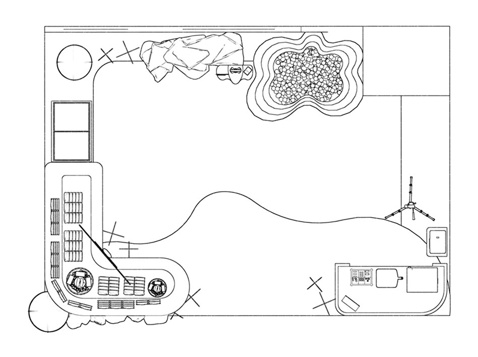
Seabed floor and wave wall read from the aisle.
Tewak pool lucky draw, or a photo in the underwater frame.
Sampling handed over at the tasting counter.
A short survey completed while standing.
Reward collected, product name carried home.
Everything a passer-by needs to decide is above waist height and outside the booth line: name, sea, one activity visibly in progress. Nothing asks for a commitment yet.
The pool and the photo frame are the price of entry — free, quick, and they put the visitor in the middle of the booth, where the product counter is already at hand.
The exchange at the end is deliberate: the visitor gives four answers and receives something to take away, and the photograph they already took does the rest of the work off-site.
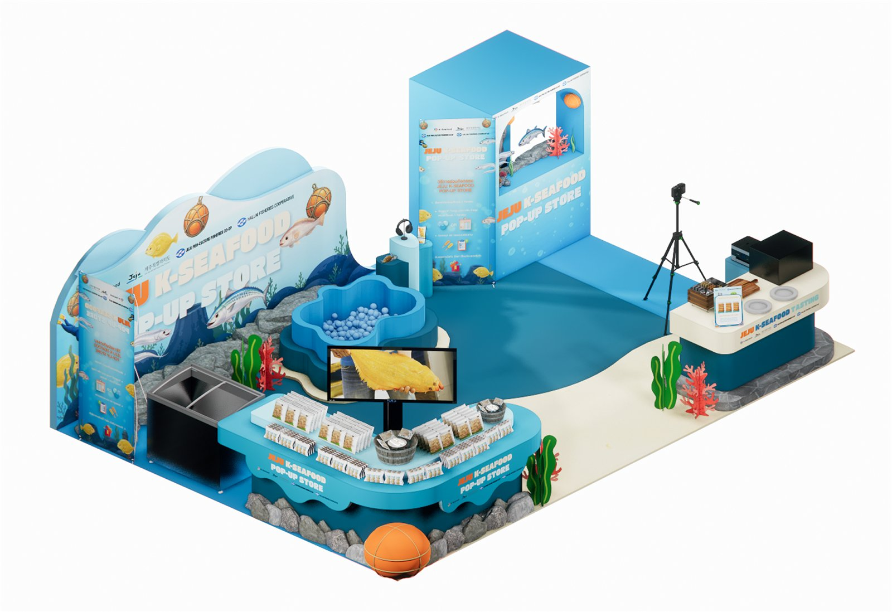
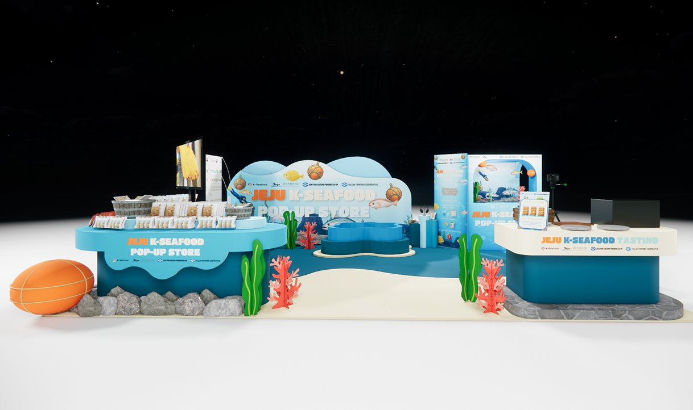
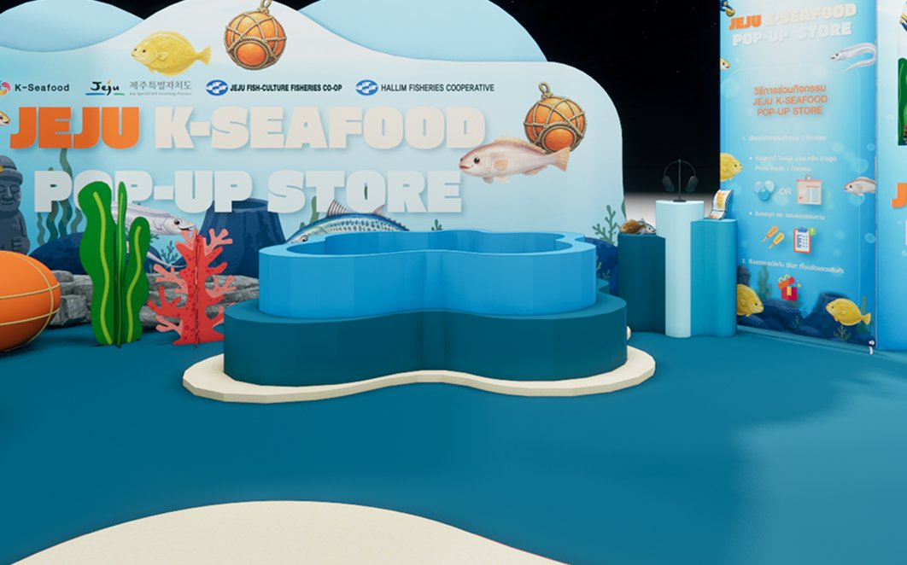
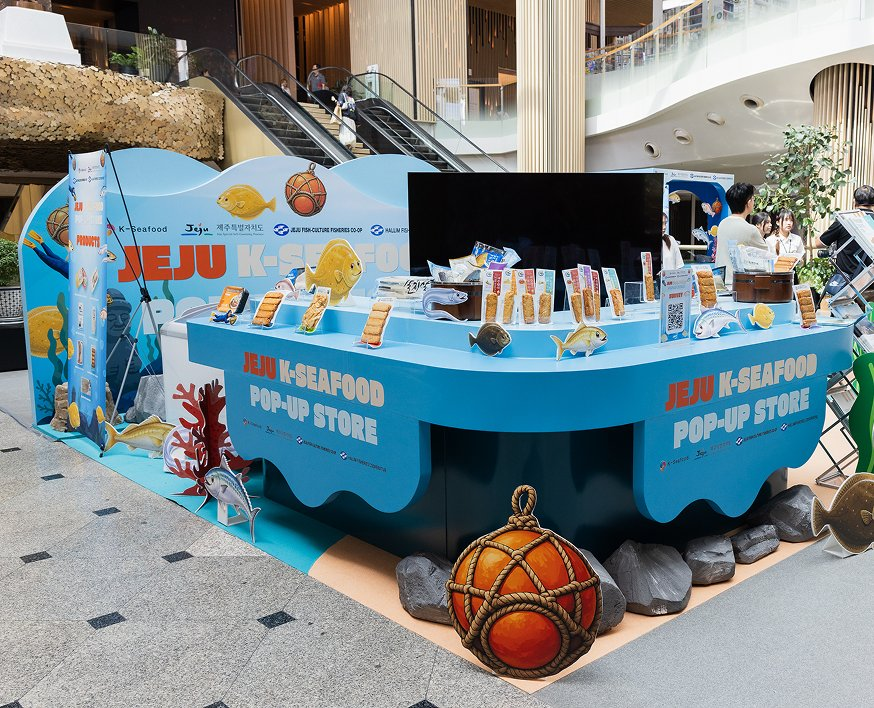
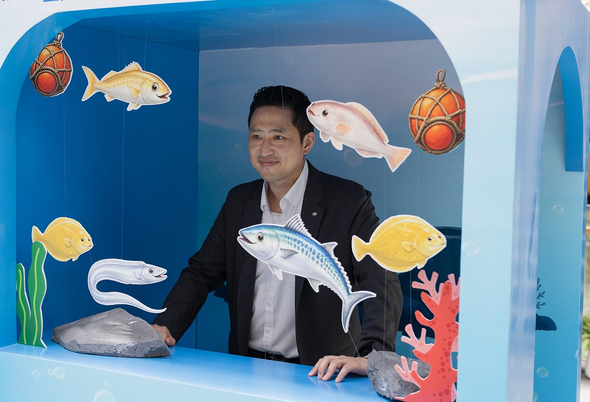
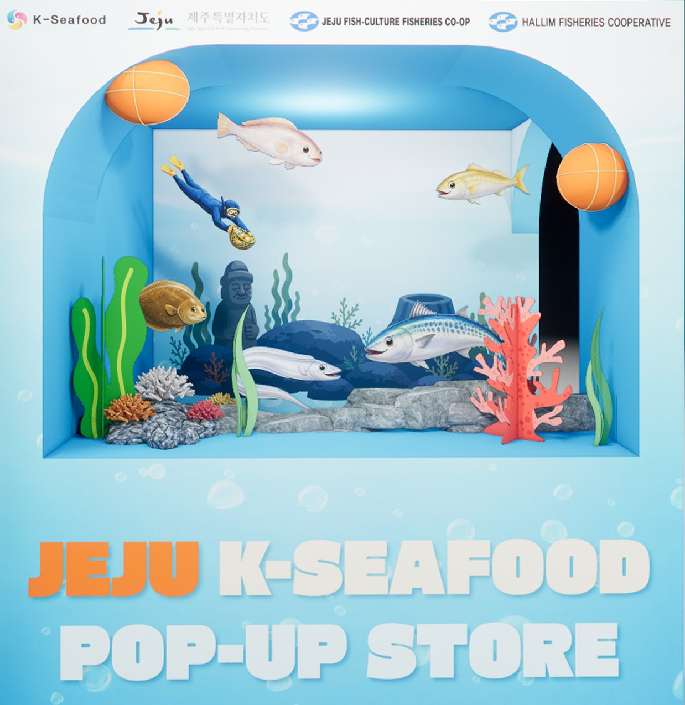
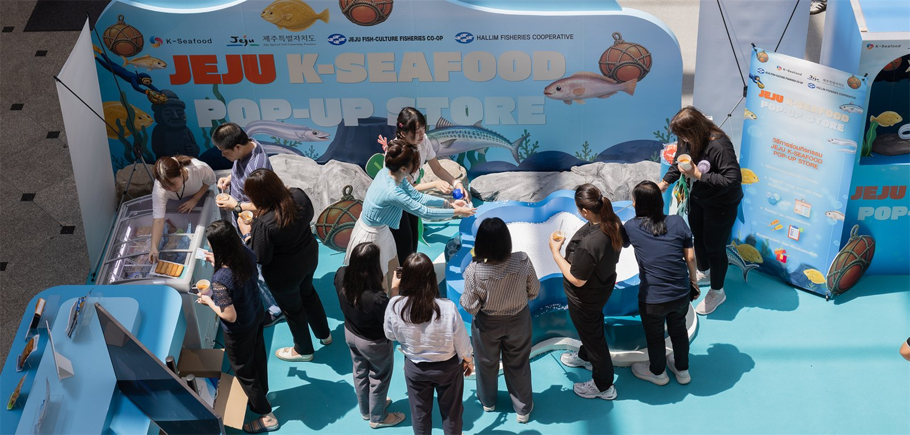
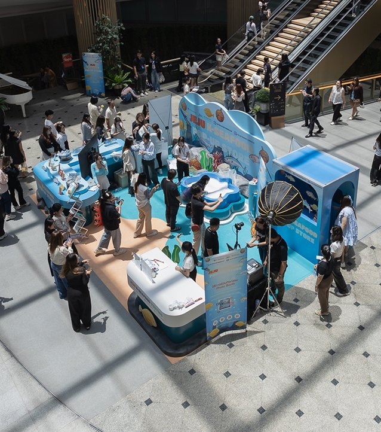
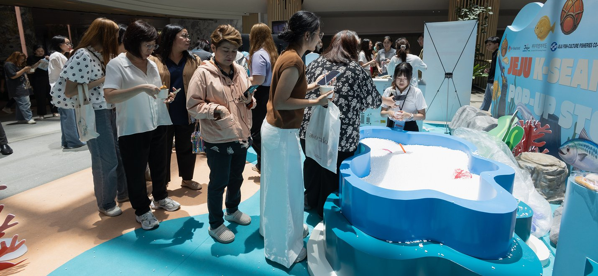
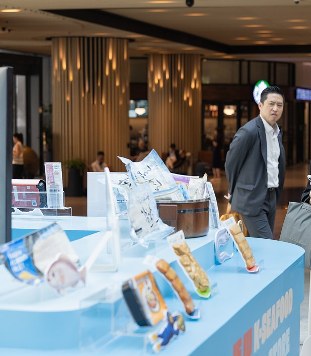
The pool did the work the staff would otherwise have to do. Once someone reaches into the basin they are already inside the booth, and the tasting no longer needs an invitation.
Rounded forms and sand tones let Jeju’s island story be told without a single fish on ice, which is what separated the booth from the navy stands either side of it.
Two activities and one tasting counter on a single loop puts the queue where visitors need to pass. I would give the redemption point its own edge of the booth and set the survey on a fixed stand, so the counter is never doing three jobs at once.